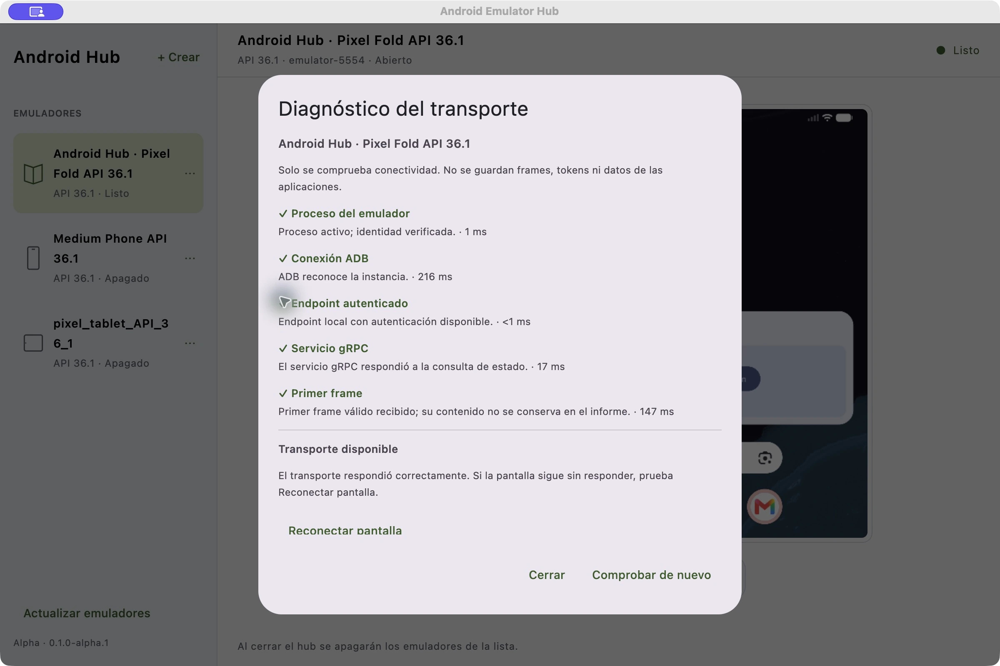

Versión en desarrollo / macOS
Tus emuladores Android,
una sola ventana.
Del teléfono al plegable. Cambia de dispositivo, prueba tu app y graba lo que ocurre desde el mismo lugar en tu Mac.
Explorar la interfaz
La interfaz
Del perfil de hardware
al primer gesto.
Mantén varios emuladores encendidos y elige cuál controlar. En un plegable puedes cambiar de postura para ver cómo responde tu diseño.

Crea el dispositivo que necesitas.
Elige un perfil y una imagen de Android. Ajusta la RAM y el almacenamiento antes de arrancar.


Descubre dónde falla la conexión.
Inspecciona ADB, gRPC y la llegada del primer fotograma. Reconecta el dispositivo desde el propio hub.
Capturas de la versión 0.1.0-alpha.1. Selecciona una imagen para ampliarla.
Comparte lo que viste.
Guarda una captura o graba las interacciones en MP4. El vídeo sigue al emulador que elegiste, incluso si cambias a otro durante la grabación.
Disponible para macOS
Prueba nuestra versión en desarrollo.
Antes de instalar
- Mac con Apple Silicon. El DMG publicado para la versión 0.1.0-alpha.5 es para ARM64.
- Android SDK local. Instala Android Emulator, Android SDK Platform-Tools y Android SDK Command-line Tools (latest).
- JDK 17 o posterior. Las herramientas de línea de comandos del SDK necesitan Java.
Instala con Homebrew
brew install --cask devpicon/tools/android-emulator-hubEsta versión aparece en tu Mac como Android Emulator Hub.
Para iniciar tu primer emulador, elige un dispositivo virtual existente o crea uno en el hub. Si te falta una imagen de Android, puedes descargarla desde la aplicación.
Ver versiones en GitHub